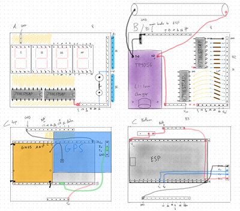
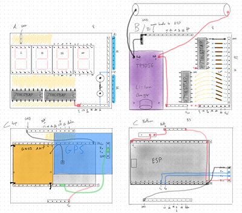

/* Back to Projects */
/* GPS Activity Logger
This project is a portable device for logging GPS data during outdoor activities.
> It is built on the esp32 platform and uses the internal flash storage to save activities.
> The device includes a vibration sensor to have "always on" behavior.
> When motion is detected, it powers on and begins recording GPS data every 5 seconds.
After 3 minutes of no activity recordings are saved and it powers off.
> Recorded tracks are saved in flash storage and can be exported via serial connection to my linux machine,
then a python script generates a heatmap of my tracks.
*/
 

/* What I learned
> Initally I designed this project on the components that I had lying around on my bench,
The only displays that I had were some cheap 7 segment LEDS, these serverely limited the usefulness of my user interface.
> I used shift registers to control the 32 segment display pins,
The shfiting propagation delay prevented me from using pwm to dim the displays hence the blue tape.
> I need to incorporate a battery location in the inital design concideration.
> I did not include protection from multiple voltage input sources.
DO NOT plug into computer and turn on battery power, it will kill it.
> I need to add a low power auto power off feature, currently it will never stop discharging my LiPo battery.
*/
/* Back to Home */